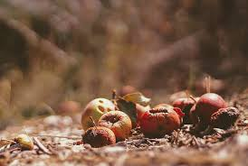
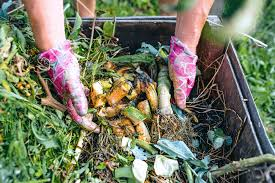

Mejora tu cosecha de forma natural
EcoBrota nutre la tierra con microorganismos vivos, mejora la retención de agua y aumenta la productividad de tus cultivos sin químicos. Promovemos un estilo de vida sostenible y respetuoso con el medio ambiente, con recursos para reciclar, compostar y crear huertos urbanos. Nos inspira construir un futuro más verde y responsable para todos.
Nuestros productos son 100% naturales. Reciclamos desechos orgánicos para crear composta que cuida tu tierra y aumenta la productividad de tus cultivos. EcoBrota es una gran inversión para un planeta más sano y un campo más productivo.



.webp)
• Aumenta la capacidad de germinación de semillas
• Aumenta aireación y capacidad de retención de agua y nutrientes
• Reducción de la erosión del suelos
• Libre de químico
.jpg)
.jpg)
.jpg)
.jpg)
100% Ecológico
Precio: $300
Sin químicos ni aditivos. Cuidamos tu tierra y tu salud.
Alta Eficiencia
Precio: $499.90
Aumenta el rendimiento de tus cultivos en menos de 30 días.
Producción Local
Precio: $200
Hecho con residuos orgánicos reciclados de la región.
Composta caliente:
Precio: $450
Un proceso rápido que utiliza altas temperaturas para descomponer los residuos orgánicos.
Composta tipo Bokashi:
Precio: $300
Un método que utiliza un cubo hermético y un activador (microorganismos).
Lombricomposta
Precio: $200
Un proceso que utiliza lombrices para descomponer los residuos orgánicos, produciendo humus de lombriz.
.jpg)
Composta vegeta
Precio:400$
Elaborada principalmente con restos de plantas, hojas, ramitas, etc.
.jpg)
Composta de estiércol
Precio:420$
Se utiliza estiércol de animales como materia prima principal, aportando nutrientes al suelo.
.jpg)
Composta de cenizas
Precio:150$
Utiliza cenizas de origen orgánico como material principal, que aportan minerales.
Composta tradicional
Precio:500$
Se mezclan diferentes tipos de desechos orgánicos y se voltean regularmente para facilitar la descomposición.
Composta seca
Precio:300$
Se utiliza una combinación de desechos orgánicos y materiales secos como hojas, aserrín, etc
Composta comunitaria
Precio:449.90$
Hecho con residuos orgánicos reciclados de la región.
Composta industrial
Precio:399.90$
Se lleva a cabo a gran escala en instalaciones especializadas.
Alta Eficiencia
Precio:500$
Aumenta el rendimiento de tus cultivos en menos de 30 días
Producción Local
Precio:150$
Hecho con residuos orgánicos reciclados de la región.
Alta Eficiencia
Precio:120$
Aumenta el rendimiento de tus cultivos en menos de 30 días
Producción Local
Precio:449.90$
Hecho con residuos orgánicos reciclados de la región.
Alta Eficiencia
Precio:300$
Aumenta el rendimiento de tus cultivos en menos de 30 días
Producción Local
Precio:220$
Hecho con residuos orgánicos reciclados de la región.
100% Ecológico
Precio:100$
Sin químicos ni aditivos. Cuidamos tu tierra y tu salud.
Solicita una muestra gratis
Dirección: Amanalco de Becerra / San Sebastián el Grande
Email: contacto@ecobrota.com
Teléfono: +52 1 729 391 7594